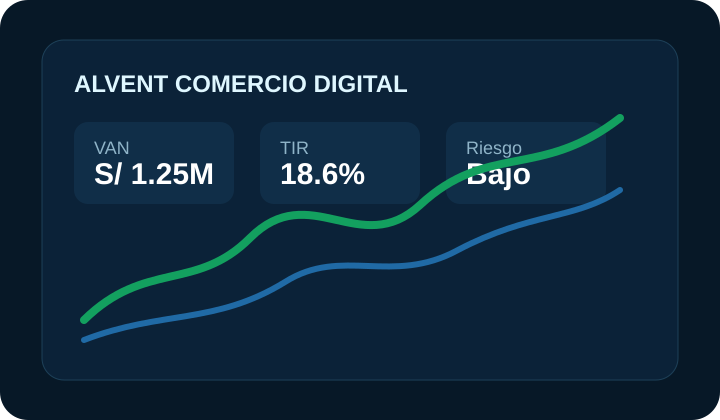
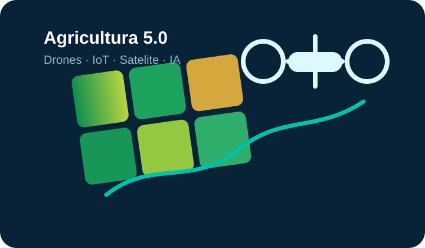
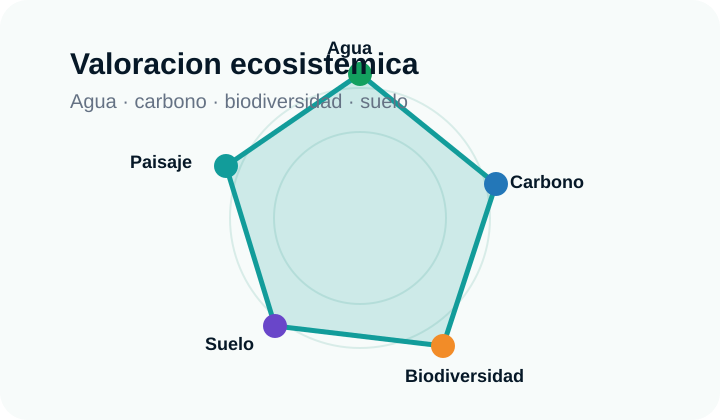

Comercio digital
Indicadores, flujo de caja, presupuestos, VAN, TIR y escenarios.
Ver aplicaciónAplicativos listos para comercio digital, gestión de proyectos, proyectos de inversión, desarrollo agrícola, prospectiva y valoración económica de servicios ecosistemicos.
Flujo financiero y productividad
Soluciones activas
Nuestras aplicaciónes
Aplicativos especializados que convierten datos en resultados inmediatos.
Indicadores, flujo de caja, presupuestos, VAN, TIR y escenarios.
Ver aplicaciónAvances, responsables, riesgos, evidencias y alertas operativas.
Ver aplicaciónPriorizacion de alternativas, sensibilidad y portafolio.
Ver aplicaciónSensores, drones, imágenes satelitales, NDVI, riego inteligente y analítica agrícola con IA.
Ver aplicaciónEscenarios, tendencias, incertidumbres y rutas de acción.
Ver aplicaciónAgua, carbono, biodiversidad y servicios ecosistemicos.
Ver aplicaciónFiguras de plataforma

Paneles de decisión con indicadores, escenarios y alertas.

Campo conectado con sensores, drones, IA y capas satelitales.

Modelos de agua, carbono, biodiversidad y territorio.
Desarrollo agrícola
Integramos imágenes satelitales, drones, sensores IoT, modelos de productividad, humedad del suelo y analítica con IA para agricultura moderna.
Explorar Desarrollo agrícolaProspectiva
Herramientas para explorar escenarios, analizar tendencias e identificar oportunidades.
Valoracion económica
Valoracion económica de servicios ecosistemicos para una gestión sostenible y decisiones con impacto positivo.
Aplicativos para organizaciones que deciden con datos